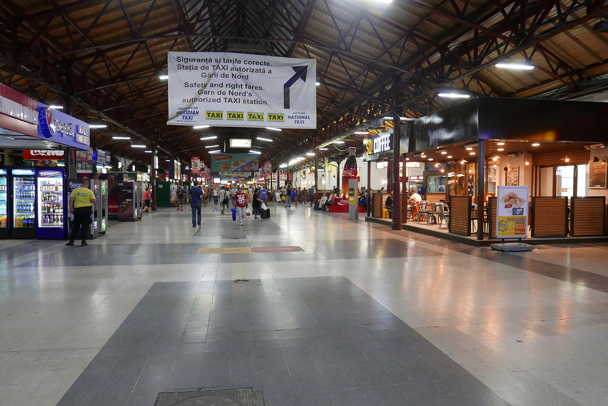

|
Demografie

O estimare a Institutului Național de Statistică arăta că populația Bucureștiului la 1 ianuarie 2016 era de 2.106.144 de locuitori, adică 9,4% din populația totală a României. Dintre aceștia, 981.835 erau bărbați, iar 1.124.309 femei. Un număr semnificativ de persoane tranzitează orașul în fiecare zi, majoritatea provenind din județul Ilfov. Date neoficiale indică faptul că afluxul zilnic este atât de mare, încât în București se pot înregistra la un moment dat circa trei milioane de persoane. |